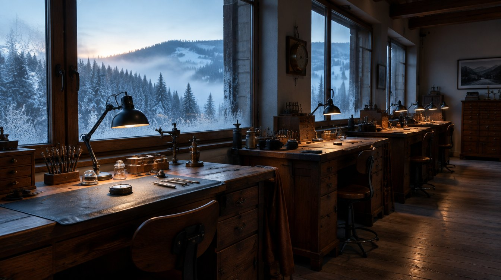

Vauclair · Vallée de Joux · MMXXVI
The instant a world passes nearest its sun. Calibre V.01: a flying tourbillon and an astronomical moon, in eighty-eight pieces.
Scroll to approach
II — Approach
Once a year the Earth swings nearest the Sun, and for a moment time feels a little closer. We spent nine winters building a watch for that feeling.

VIII — A film
Nine Winters
The making of Calibre V.01 · 3 min
IX — Allocation
Eighty-eight.
Allocation opens at perihelion, 3 January 2027, when the Earth passes closest to the Sun. Requests are read in Le Brassus, one at a time, by the people who made the watch.
000DAYS
00HRS
00MIN
00SEC